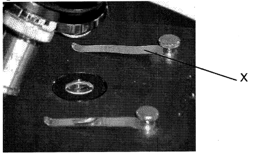
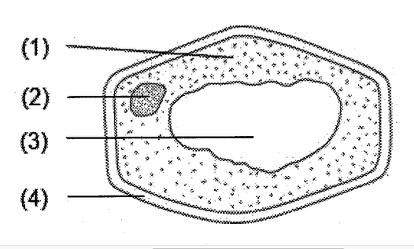
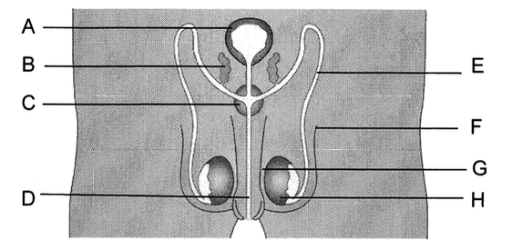
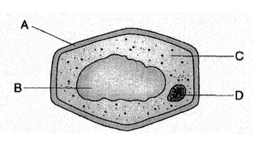
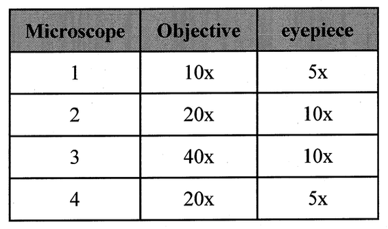
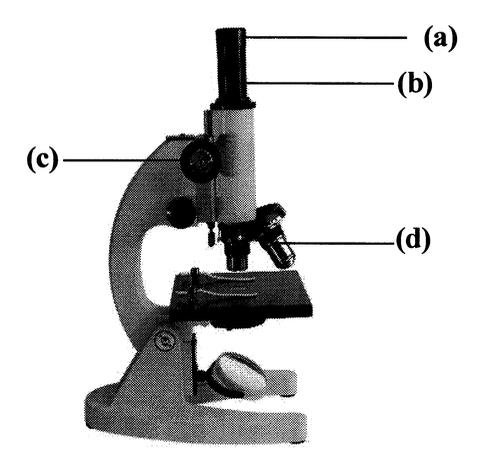

Section A : True or False Questions
1. Chloroplasts are present in all plant cells.
2. Amoeba is a multicellular organism.
3. Cell membrane gives shape to the cell.
4. Sperms are produced in testes.
5. After cell division, each new individual cell carries half of the genetic materials.
6. A fertilized ovum carries a mix of genetic materials from the father and the mother.
7. Wet dreams are not harmful to the body.
8. At puberty, our body produces more sex hormones.
9. A human cell carries 23 pairs of chromosomes.
10. A light microscope can magnify an object up to 1000000 times.
Section B : Multiple Choice Questions
11. What is the function of part X in the microscope?

12. Which of the following parts in a cell starts the process of cell division?

13. Which of the following parts can be found in both man and woman?
14. Which part provides nutrients for the sperms?
15. Which structures are responsible for producing semen?

16. The diagram on the right shows a plant cell. DNA is found in

17. Which of the following cell(s) has/have chloroplasts?
18. What will you observe for the letter 'p' under a light microscope?
19. Which microscope would you expect to observe the greatest number of cells at a time?

20. Which of the following statements about DNA in a human cell are correct?
Section C : Fill in the Blanks
21. Name the parts (a) to (d) of the microscope.

a.
b.
c.
d.
22. Cells become specialized for particular functions in a process called .
23. In a woman, the process of releasing an ovum from the ovary into the oviduct once a month is called .
24. Cells can carry out a process called to increase the number of cells.
25. Organisms made up of many cells are known as organisms.
26. The adjusts the amount of light entering the microscope.
27. Ovum contains a lot of substances for early embryo development.
Section D : Matching Questions
28. Match the following:
1. Chloroplast Select a b c d e
2. Cell Wall Select a b c d e
3. Cell membrane Select a b c d e
4. Cytoplasm Select a b c d e
5. Vacuole Select a b c d e
Descriptions:
a. The site where many chemical reactions take place.
b. Contains a solution of sugars, proteins, minerals and other substances.
c. The site where photosynthesis takes place.
d. Protects the structures in the cell and gives the cell a regular shape.
e. Controls the movement of substances into and out of the cell.
Section E : Short Questions
29. What is puberty?
30. Explain how osmosis occurs in cells.